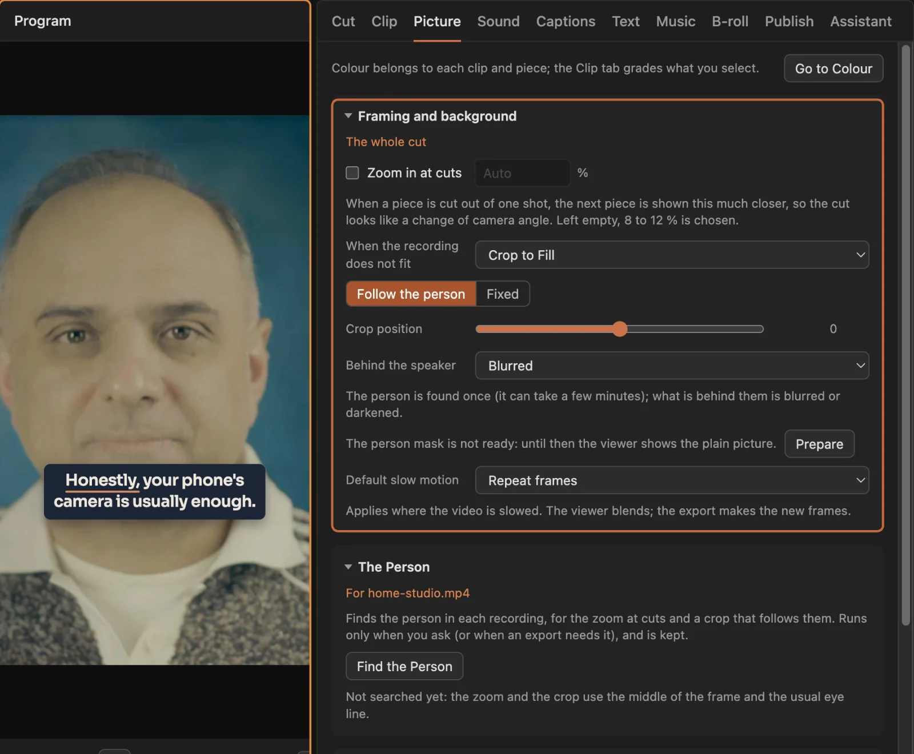

Picture
The Picture tab sets how your video is framed: its shape, where the crop sits, what happens behind you. The colour of each clip is in the Clip tab.

Shape
The shape is chosen in the top bar: Horizontal 16:9, Vertical 9:16 or Square 1:1. When the recording does not fit the shape, pick Crop to Fill or Fit With Bars.
Framing and background
- Follow the person keeps the crop on you as you move, instead of Fixed. Crop position moves a fixed crop.
- The Person: Find the Person looks for you in each recording, for the crop that follows you and the zoom at cuts. It runs on this computer only when you ask (or when an export needs it), and is kept.
- Behind the speaker: As filmed, Blurred or Darkened. The person is found once; it can take a few minutes.
Zoom in at cuts
When a piece is cut out of one shot, Zoom in at cuts shows the next piece a little closer, so the cut looks like a change of camera angle. Left empty, 8 to 12 % is chosen.
Camera and multicam
The same tab holds Camera (tutorials), for a camera paired with a screen recording (Screen tutorials), and Virtual multicam, which makes a close frame for each person in a wide shot and cuts to whoever speaks (Multicam and speakers).
Default slow motion sets how slowed footage is filled in, for every clip that does not set its own.
Colour
Colour belongs to each clip and piece: select one and grade it in the Clip tab. Go to Colour takes you there (Colour).
Everything here shows live in the viewer and is used on export.